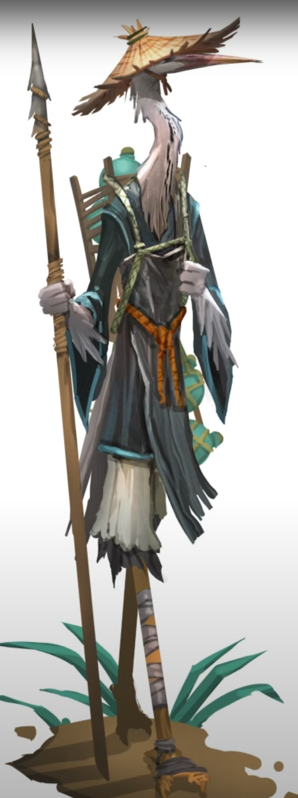

Species Overview
Physiology
Stiltkin range from dull grays to shimmering blues, their bodies covered in fine, hair-like feathers. Despite the avian look and longer feathers along their forearms, they have no wings. Their tail feathers often hang long enough to resemble the back of an elaborate tunic.
Demeanor
Outsiders often remark the Stiltkin for their reserved and contemplative nature, noting how they prefer to observe rather than speak. Once they've taken the measure of a stranger and welcomed them in, Stiltkin are remarkably accepting of all backgrounds.
History
The Stiltkin have always lived in the Murk. They are primarily a spear- and bow-fishing community, surviving off the flesh-eating fish that inhabit the rivers. The stillness their trade demands carries into the rest of their culture, with meditative arts like basket-weaving and glassblowing being most prominent.
A recent trade contract with the Shard Cities for their coveted mana-infused spirit has drawn some Stiltkin out into the wider world.
Outlook
The Stiltkin lead simple and harmonious lives, their philosophies reflecting the patient rhythm of the wetland seasons:
- Still waters become clear.
- A straight line is often slower.
- Unity in diversity, strength in conviction.
- Respect whispers louder than dissenting shouts.
- Viewpoints are lenses to understand the world. See through many.
Adventurers
Young Stiltkin are often inspired to venture out after hearing tales from the elder monks who trade mana-spirit to the Shard Cities. Their mastery of stillness and silence makes them excellent observers, especially in crowded places.
Typical Names
To a Stiltkin, a name captures the essence of the individual. Names typically follow an Adjective Noun structure, with nouns rooted in natural or spiritual meaning.
Examples: Grim Sorrow, Angry River, Wise Warble, Calm Calling
